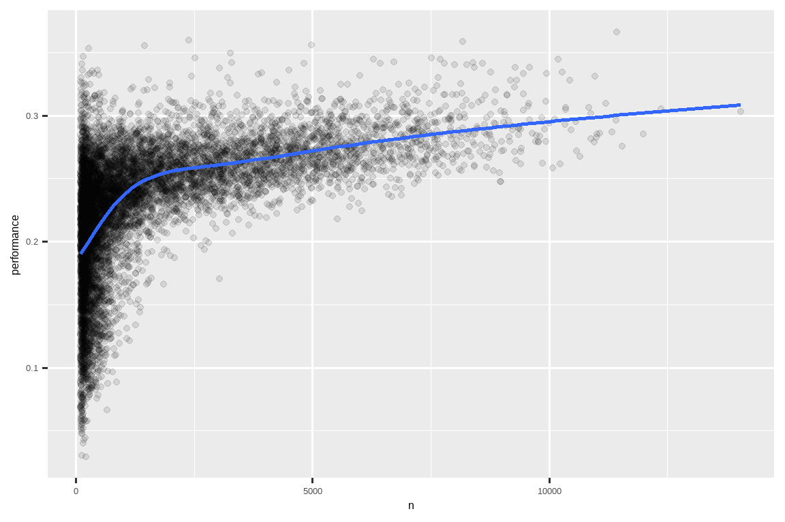

library(nycflights13)
library(tidyverse)
#> ── Attaching core tidyverse packages ───────────────────── tidyverse 2.0.0 ──
#> ✔ dplyr 1.1.4 ✔ readr 2.1.5
#> ✔ forcats 1.0.0 ✔ stringr 1.5.1
#> ✔ ggplot2 3.5.2 ✔ tibble 3.3.0
#> ✔ lubridate 1.9.4 ✔ tidyr 1.3.1
#> ✔ purrr 1.0.4
#> ── Conflicts ─────────────────────────────────────── tidyverse_conflicts() ──
#> ✖ dplyr::filter() masks stats::filter()
#> ✖ dplyr::lag() masks stats::lag()
#> ℹ Use the conflicted package (<http://conflicted.r-lib.org/>) to force all conflicts to become errors3 Data transformation
3.1 Introduction
Visualization is an important tool for generating insight, but it’s rare that you get the data in exactly the right form you need to make the graph you want. Often you’ll need to create some new variables or summaries to answer your questions with your data, or maybe you just want to rename the variables or reorder the observations to make the data a little easier to work with. You’ll learn how to do all that (and more!) in this chapter, which will introduce you to data transformation using the dplyr package and a new dataset on flights that departed from New York City in 2013.
可视化是产生洞见的重要工具，但你很少能得到形式完全符合你需求的原始数据来制作想要的图表。通常，你需要创建一些新变量或摘要，以便用数据回答你的问题，或者你可能只是想重命名变量或重排观测值，让数据更容易处理。在本章中，你将学到所有这些（甚至更多！），本章将向你介绍如何使用 dplyr 包和一个关于 2013 年从纽约市出发航班的新数据集来进行数据转换。
The goal of this chapter is to give you an overview of all the key tools for transforming a data frame. We’ll start with functions that operate on rows and then columns of a data frame, then circle back to talk more about the pipe, an important tool that you use to combine verbs. We will then introduce the ability to work with groups. We will end the chapter with a case study that showcases these functions in action. In later chapters, we’ll return to the functions in more detail as we start to dig into specific types of data (e.g., numbers, strings, dates).
本章的目标是为你概述所有用于转换数据框 (data frame) 的关键工具。我们将从操作数据框行和列的函数开始，然后回过头来更多地讨论管道 (pipe)，这是一个用于组合动词的重要工具。接着，我们将介绍处理分组的能力。本章最后会通过一个案例研究来展示这些函数的实际应用。在后面的章节中，当我们开始深入研究特定类型的数据（例如，数字、字符串、日期）时，我们会更详细地回顾这些函数。
3.1.1 Prerequisites
In this chapter, we’ll focus on the dplyr package, another core member of the tidyverse. We’ll illustrate the key ideas using data from the nycflights13 package and use ggplot2 to help us understand the data.
在本章中，我们将重点关注 dplyr 包，它是 tidyverse 的另一个核心成员。我们将使用 nycflights13 包中的数据来说明关键思想，并使用 ggplot2 来帮助我们理解数据。
Take careful note of the conflicts message that’s printed when you load the tidyverse. It tells you that dplyr overwrites some functions in base R. If you want to use the base version of these functions after loading dplyr, you’ll need to use their full names: stats::filter() and stats::lag(). So far, we’ve mostly ignored which package a function comes from because it doesn’t usually matter. However, knowing the package can help you find help and find related functions, so when we need to be precise about which package a function comes from, we’ll use the same syntax as R: packagename::functionname().
请仔细注意加载 tidyverse 时打印的冲突信息。它告诉你 dplyr 覆盖了基础 R 中的一些函数。如果在加载 dplyr 后想使用这些函数的基础版本，你需要使用它们的全名：stats::filter() 和 stats::lag()。到目前为止，我们大多忽略了函数来自哪个包，因为这通常不重要。然而，了解包可以帮助你查找帮助和相关函数，所以当我们需精确指明函数来自哪个包时，我们将使用与 R 相同的语法：packagename::functionname()。
3.1.2 nycflights13
To explore the basic dplyr verbs, we will use nycflights13::flights. This dataset contains all 336,776 flights that departed from New York City in 2013. The data comes from the US Bureau of Transportation Statistics and is documented in ?flights.
为了探索基本的 dplyr 动词，我们将使用 nycflights13::flights。该数据集包含了 2013 年从纽约市起飞的所有 336,776 个航班。数据来自美国交通统计局，并在 ?flights 中有详细文档。
flights
#> # A tibble: 336,776 × 19
#> year month day dep_time sched_dep_time dep_delay arr_time sched_arr_time
#> <int> <int> <int> <int> <int> <dbl> <int> <int>
#> 1 2013 1 1 517 515 2 830 819
#> 2 2013 1 1 533 529 4 850 830
#> 3 2013 1 1 542 540 2 923 850
#> 4 2013 1 1 544 545 -1 1004 1022
#> 5 2013 1 1 554 600 -6 812 837
#> 6 2013 1 1 554 558 -4 740 728
#> # ℹ 336,770 more rows
#> # ℹ 11 more variables: arr_delay <dbl>, carrier <chr>, flight <int>, …flights is a tibble, a special type of data frame used by the tidyverse to avoid some common gotchas. The most important difference between tibbles and data frames is the way tibbles print; they are designed for large datasets, so they only show the first few rows and only the columns that fit on one screen. There are a few options to see everything. If you’re using RStudio, the most convenient is probably View(flights), which opens an interactive, scrollable, and filterable view. Otherwise you can use print(flights, width = Inf) to show all columns, or use glimpse():flights 是一个 tibble，这是 tidyverse 使用的一种特殊类型的数据框 (data frame)，用以避免一些常见的陷阱。tibble 和 data frame 最重要的区别在于 tibble 的打印方式；它们专为大型数据集设计，因此只显示前几行以及能在一个屏幕上容纳的列。有几种方法可以查看所有内容。如果你正在使用 RStudio，最方便的可能是 View(flights)，它会打开一个可交互、可滚动和可筛选的视图。否则，你可以使用 print(flights, width = Inf) 来显示所有列，或者使用 glimpse()：
glimpse(flights)
#> Rows: 336,776
#> Columns: 19
#> $ year <int> 2013, 2013, 2013, 2013, 2013, 2013, 2013, 2013, 2013…
#> $ month <int> 1, 1, 1, 1, 1, 1, 1, 1, 1, 1, 1, 1, 1, 1, 1, 1, 1, 1…
#> $ day <int> 1, 1, 1, 1, 1, 1, 1, 1, 1, 1, 1, 1, 1, 1, 1, 1, 1, 1…
#> $ dep_time <int> 517, 533, 542, 544, 554, 554, 555, 557, 557, 558, 55…
#> $ sched_dep_time <int> 515, 529, 540, 545, 600, 558, 600, 600, 600, 600, 60…
#> $ dep_delay <dbl> 2, 4, 2, -1, -6, -4, -5, -3, -3, -2, -2, -2, -2, -2,…
#> $ arr_time <int> 830, 850, 923, 1004, 812, 740, 913, 709, 838, 753, 8…
#> $ sched_arr_time <int> 819, 830, 850, 1022, 837, 728, 854, 723, 846, 745, 8…
#> $ arr_delay <dbl> 11, 20, 33, -18, -25, 12, 19, -14, -8, 8, -2, -3, 7,…
#> $ carrier <chr> "UA", "UA", "AA", "B6", "DL", "UA", "B6", "EV", "B6"…
#> $ flight <int> 1545, 1714, 1141, 725, 461, 1696, 507, 5708, 79, 301…
#> $ tailnum <chr> "N14228", "N24211", "N619AA", "N804JB", "N668DN", "N…
#> $ origin <chr> "EWR", "LGA", "JFK", "JFK", "LGA", "EWR", "EWR", "LG…
#> $ dest <chr> "IAH", "IAH", "MIA", "BQN", "ATL", "ORD", "FLL", "IA…
#> $ air_time <dbl> 227, 227, 160, 183, 116, 150, 158, 53, 140, 138, 149…
#> $ distance <dbl> 1400, 1416, 1089, 1576, 762, 719, 1065, 229, 944, 73…
#> $ hour <dbl> 5, 5, 5, 5, 6, 5, 6, 6, 6, 6, 6, 6, 6, 6, 6, 5, 6, 6…
#> $ minute <dbl> 15, 29, 40, 45, 0, 58, 0, 0, 0, 0, 0, 0, 0, 0, 0, 59…
#> $ time_hour <dttm> 2013-01-01 05:00:00, 2013-01-01 05:00:00, 2013-01-0…In both views, the variable names are followed by abbreviations that tell you the type of each variable: <int> is short for integer, <dbl> is short for double (aka real numbers), <chr> for character (aka strings), and <dttm> for date-time. These are important because the operations you can perform on a column depend heavily on its “type.”
在这两种视图中，变量名后面都跟着缩写，告诉你每个变量的类型：<int> 是整数 (integer) 的缩写，<dbl> 是双精度浮点数 (double)（也即实数）的缩写，<chr> 是字符 (character)（也即字符串）的缩写，而 <dttm> 是日期时间 (date-time) 的缩写。这些信息很重要，因为你能对一列执行的操作在很大程度上取决于它的“类型”。
3.1.3 dplyr basics
You’re about to learn the primary dplyr verbs (functions), which will allow you to solve the vast majority of your data manipulation challenges. But before we discuss their individual differences, it’s worth stating what they have in common:
你即将学习主要的 dplyr 动词（函数），它们将使你能够解决绝大多数数据操作挑战。但在我们讨论它们各自的差异之前，有必要说明它们的共同点：
-
The first argument is always a data frame.
第一个参数总是一个数据框。
The subsequent arguments typically describe which columns to operate on using the variable names (without quotes).
后续的参数通常使用变量名（不带引号）来描述要操作的列。The output is always a new data frame.
输出总是一个新的数据框。
Because each verb does one thing well, solving complex problems will usually require combining multiple verbs, and we’ll do so with the pipe, |>. We’ll discuss the pipe more in Section 3.4, but in brief, the pipe takes the thing on its left and passes it along to the function on its right so that x |> f(y) is equivalent to f(x, y), and x |> f(y) |> g(z) is equivalent to g(f(x, y), z). The easiest way to pronounce the pipe is “then”. That makes it possible to get a sense of the following code even though you haven’t yet learned the details:
因为每个动词都能很好地完成一件事，所以解决复杂问题通常需要组合多个动词，我们将使用管道 |> 来实现。我们将在 Section 3.4 中更多地讨论管道，但简而言之，管道将其左侧的内容传递给右侧的函数，因此 x |> f(y) 等同于 f(x, y)，而 x |> f(y) |> g(z) 等同于 g(f(x, y), z)。管道最简单的读法是“然后”(then)。这使得即使你还没有学习细节，也能大致理解以下代码的含义：
dplyr’s verbs are organized into four groups based on what they operate on: rows, columns, groups, or tables. In the following sections, you’ll learn the most important verbs for rows, columns, and groups. Then, we’ll return to the join verbs that work on tables in Chapter 19. Let’s dive in!
dplyr 的动词根据其操作对象分为四组：行 (rows)、列 (columns)、分组 (groups) 或 表 (tables)。在接下来的部分，你将学习针对行、列和分组的最重要的动词。然后，我们将在 Chapter 19 中回过头来学习处理表的连接动词。让我们开始吧！
3.2 Rows
The most important verbs that operate on rows of a dataset are filter(), which changes which rows are present without changing their order, and arrange(), which changes the order of the rows without changing which are present. Both functions only affect the rows, and the columns are left unchanged. We’ll also discuss distinct() which finds rows with unique values. Unlike arrange() and filter() it can also optionally modify the columns.
操作数据集行的最重要动词是 filter() 和 arrange()。filter() 改变存在的行而不改变它们的顺序，而 arrange() 改变行的顺序而不改变存在的行。这两个函数都只影响行，列保持不变。我们还将讨论 distinct()，它能找到具有唯一值的行。与 arrange() 和 filter() 不同，它还可以选择性地修改列。
3.2.1 filter()
filter() allows you to keep rows based on the values of the columns1. The first argument is the data frame. The second and subsequent arguments are the conditions that must be true to keep the row. For example, we could find all flights that departed more than 120 minutes (two hours) late:filter() 允许你根据列的值保留行1。第一个参数是数据框。第二个及后续参数是保留行必须满足的条件。例如，我们可以找到所有晚点超过 120 分钟（两小时）起飞的航班：
flights |>
filter(dep_delay > 120)
#> # A tibble: 9,723 × 19
#> year month day dep_time sched_dep_time dep_delay arr_time sched_arr_time
#> <int> <int> <int> <int> <int> <dbl> <int> <int>
#> 1 2013 1 1 848 1835 853 1001 1950
#> 2 2013 1 1 957 733 144 1056 853
#> 3 2013 1 1 1114 900 134 1447 1222
#> 4 2013 1 1 1540 1338 122 2020 1825
#> 5 2013 1 1 1815 1325 290 2120 1542
#> 6 2013 1 1 1842 1422 260 1958 1535
#> # ℹ 9,717 more rows
#> # ℹ 11 more variables: arr_delay <dbl>, carrier <chr>, flight <int>, …As well as > (greater than), you can use >= (greater than or equal to), < (less than), <= (less than or equal to), == (equal to), and != (not equal to). You can also combine conditions with & or , to indicate “and” (check for both conditions) or with | to indicate “or” (check for either condition):
除了 > (大于)，你还可以使用 >= (大于或等于), < (小于), <= (小于或等于), == (等于), 和 != (不等于)。你也可以用 & 或 , 组合条件来表示“与”（检查两个条件），或用 | 表示“或”（检查任一条件）：
# Flights that departed on January 1
flights |>
filter(month == 1 & day == 1)
#> # A tibble: 842 × 19
#> year month day dep_time sched_dep_time dep_delay arr_time sched_arr_time
#> <int> <int> <int> <int> <int> <dbl> <int> <int>
#> 1 2013 1 1 517 515 2 830 819
#> 2 2013 1 1 533 529 4 850 830
#> 3 2013 1 1 542 540 2 923 850
#> 4 2013 1 1 544 545 -1 1004 1022
#> 5 2013 1 1 554 600 -6 812 837
#> 6 2013 1 1 554 558 -4 740 728
#> # ℹ 836 more rows
#> # ℹ 11 more variables: arr_delay <dbl>, carrier <chr>, flight <int>, …
# Flights that departed in January or February
flights |>
filter(month == 1 | month == 2)
#> # A tibble: 51,955 × 19
#> year month day dep_time sched_dep_time dep_delay arr_time sched_arr_time
#> <int> <int> <int> <int> <int> <dbl> <int> <int>
#> 1 2013 1 1 517 515 2 830 819
#> 2 2013 1 1 533 529 4 850 830
#> 3 2013 1 1 542 540 2 923 850
#> 4 2013 1 1 544 545 -1 1004 1022
#> 5 2013 1 1 554 600 -6 812 837
#> 6 2013 1 1 554 558 -4 740 728
#> # ℹ 51,949 more rows
#> # ℹ 11 more variables: arr_delay <dbl>, carrier <chr>, flight <int>, …There’s a useful shortcut when you’re combining | and ==: %in%. It keeps rows where the variable equals one of the values on the right:
当你组合使用 | 和 == 时，有一个很有用的快捷方式：%in%。它会保留变量值等于右侧任一值的行：
# A shorter way to select flights that departed in January or February
flights |>
filter(month %in% c(1, 2))
#> # A tibble: 51,955 × 19
#> year month day dep_time sched_dep_time dep_delay arr_time sched_arr_time
#> <int> <int> <int> <int> <int> <dbl> <int> <int>
#> 1 2013 1 1 517 515 2 830 819
#> 2 2013 1 1 533 529 4 850 830
#> 3 2013 1 1 542 540 2 923 850
#> 4 2013 1 1 544 545 -1 1004 1022
#> 5 2013 1 1 554 600 -6 812 837
#> 6 2013 1 1 554 558 -4 740 728
#> # ℹ 51,949 more rows
#> # ℹ 11 more variables: arr_delay <dbl>, carrier <chr>, flight <int>, …We’ll come back to these comparisons and logical operators in more detail in Chapter 12.
我们将在 Chapter 12 中更详细地讨论这些比较和逻辑运算符。
When you run filter() dplyr executes the filtering operation, creating a new data frame, and then prints it. It doesn’t modify the existing flights dataset because dplyr functions never modify their inputs. To save the result, you need to use the assignment operator, <-:
当你运行 filter() 时，dplyr 会执行筛选操作，创建一个新的数据框，然后打印它。它不会修改现有的 flights 数据集，因为 dplyr 函数从不修改它们的输入。要保存结果，你需要使用赋值运算符 <-：
jan1 <- flights |>
filter(month == 1 & day == 1)3.2.2 Common mistakes
When you’re starting out with R, the easiest mistake to make is to use = instead of == when testing for equality. filter() will let you know when this happens:
当你刚开始使用 R 时，最容易犯的错误是在测试相等性时使用 = 而不是 ==。filter() 会在这种情况下提醒你：
flights |>
filter(month = 1)
#> Error in `filter()`:
#> ! We detected a named input.
#> ℹ This usually means that you've used `=` instead of `==`.
#> ℹ Did you mean `month == 1`?Another mistakes is you write “or” statements like you would in English:
另一个错误是像在英语中那样写“或”语句：
flights |>
filter(month == 1 | 2)This “works”, in the sense that it doesn’t throw an error, but it doesn’t do what you want because | first checks the condition month == 1 and then checks the condition 2, which is not a sensible condition to check. We’ll learn more about what’s happening here and why in Section 12.3.2.
这“行得通”，因为它不会抛出错误，但它不会做你想要的事情，因为 | 首先检查条件 month == 1，然后检查条件 2，这不是一个合理的检查条件。我们将在 Section 12.3.2 中更多地了解这里发生了什么以及为什么会这样。
3.2.3 arrange()
arrange() changes the order of the rows based on the value of the columns. It takes a data frame and a set of column names (or more complicated expressions) to order by. If you provide more than one column name, each additional column will be used to break ties in the values of the preceding columns. For example, the following code sorts by the departure time, which is spread over four columns. We get the earliest years first, then within a year, the earliest months, etc.arrange() 根据列的值改变行的顺序。它接受一个数据框和一组用于排序的列名（或更复杂的表达式）。如果你提供多个列名，每个额外的列将用于打破前面列值中的平局。例如，以下代码按出发时间排序，该时间分布在四个列中。我们首先得到最早的年份，然后在一年内得到最早的月份，依此类推。
flights |>
arrange(year, month, day, dep_time)
#> # A tibble: 336,776 × 19
#> year month day dep_time sched_dep_time dep_delay arr_time sched_arr_time
#> <int> <int> <int> <int> <int> <dbl> <int> <int>
#> 1 2013 1 1 517 515 2 830 819
#> 2 2013 1 1 533 529 4 850 830
#> 3 2013 1 1 542 540 2 923 850
#> 4 2013 1 1 544 545 -1 1004 1022
#> 5 2013 1 1 554 600 -6 812 837
#> 6 2013 1 1 554 558 -4 740 728
#> # ℹ 336,770 more rows
#> # ℹ 11 more variables: arr_delay <dbl>, carrier <chr>, flight <int>, …You can use desc() on a column inside of arrange() to re-order the data frame based on that column in descending (big-to-small) order. For example, this code orders flights from most to least delayed:
你可以在 arrange() 内对列使用 desc()，以按该列的降序（从大到小）重新排序数据框。例如，这段代码将航班按延误程度从高到低排序：
flights |>
arrange(desc(dep_delay))
#> # A tibble: 336,776 × 19
#> year month day dep_time sched_dep_time dep_delay arr_time sched_arr_time
#> <int> <int> <int> <int> <int> <dbl> <int> <int>
#> 1 2013 1 9 641 900 1301 1242 1530
#> 2 2013 6 15 1432 1935 1137 1607 2120
#> 3 2013 1 10 1121 1635 1126 1239 1810
#> 4 2013 9 20 1139 1845 1014 1457 2210
#> 5 2013 7 22 845 1600 1005 1044 1815
#> 6 2013 4 10 1100 1900 960 1342 2211
#> # ℹ 336,770 more rows
#> # ℹ 11 more variables: arr_delay <dbl>, carrier <chr>, flight <int>, …Note that the number of rows has not changed – we’re only arranging the data, we’re not filtering it.
注意，行的数量没有改变——我们只是在排列数据，而不是筛选数据。
3.2.4 distinct()
distinct() finds all the unique rows in a dataset, so technically, it primarily operates on the rows. Most of the time, however, you’ll want the distinct combination of some variables, so you can also optionally supply column names:distinct() 找出数据集中的所有唯一行，所以从技术上讲，它主要操作的是行。然而，大多数时候，你会想要一些变量的独特组合，所以你也可以选择性地提供列名：
# Remove duplicate rows, if any
flights |>
distinct()
#> # A tibble: 336,776 × 19
#> year month day dep_time sched_dep_time dep_delay arr_time sched_arr_time
#> <int> <int> <int> <int> <int> <dbl> <int> <int>
#> 1 2013 1 1 517 515 2 830 819
#> 2 2013 1 1 533 529 4 850 830
#> 3 2013 1 1 542 540 2 923 850
#> 4 2013 1 1 544 545 -1 1004 1022
#> 5 2013 1 1 554 600 -6 812 837
#> 6 2013 1 1 554 558 -4 740 728
#> # ℹ 336,770 more rows
#> # ℹ 11 more variables: arr_delay <dbl>, carrier <chr>, flight <int>, …
# Find all unique origin and destination pairs
flights |>
distinct(origin, dest)
#> # A tibble: 224 × 2
#> origin dest
#> <chr> <chr>
#> 1 EWR IAH
#> 2 LGA IAH
#> 3 JFK MIA
#> 4 JFK BQN
#> 5 LGA ATL
#> 6 EWR ORD
#> # ℹ 218 more rowsAlternatively, if you want to keep the other columns when filtering for unique rows, you can use the .keep_all = TRUE option.
另外，如果你在筛选唯一行时想保留其他列，可以使用 .keep_all = TRUE 选项。
flights |>
distinct(origin, dest, .keep_all = TRUE)
#> # A tibble: 224 × 19
#> year month day dep_time sched_dep_time dep_delay arr_time sched_arr_time
#> <int> <int> <int> <int> <int> <dbl> <int> <int>
#> 1 2013 1 1 517 515 2 830 819
#> 2 2013 1 1 533 529 4 850 830
#> 3 2013 1 1 542 540 2 923 850
#> 4 2013 1 1 544 545 -1 1004 1022
#> 5 2013 1 1 554 600 -6 812 837
#> 6 2013 1 1 554 558 -4 740 728
#> # ℹ 218 more rows
#> # ℹ 11 more variables: arr_delay <dbl>, carrier <chr>, flight <int>, …It’s not a coincidence that all of these distinct flights are on January 1: distinct() will find the first occurrence of a unique row in the dataset and discard the rest.
所有这些不同的航班都发生在 1 月 1 日并非巧合：distinct() 会找到数据集中唯一行的首次出现，并丢弃其余的。
If you want to find the number of occurrences instead, you’re better off swapping distinct() for count(). With the sort = TRUE argument, you can arrange them in descending order of the number of occurrences. You’ll learn more about count in Section 13.3.
如果你想找出出现次数，最好用 count() 替换 distinct()。通过 sort = TRUE 参数，你可以按出现次数的降序排列它们。你将在 Section 13.3 中学到更多关于 count 的知识。
flights |>
count(origin, dest, sort = TRUE)
#> # A tibble: 224 × 3
#> origin dest n
#> <chr> <chr> <int>
#> 1 JFK LAX 11262
#> 2 LGA ATL 10263
#> 3 LGA ORD 8857
#> 4 JFK SFO 8204
#> 5 LGA CLT 6168
#> 6 EWR ORD 6100
#> # ℹ 218 more rows3.2.5 Exercises
-
In a single pipeline for each condition, find all flights that meet the condition:
- Had an arrival delay of two or more hours
- Flew to Houston (
IAHorHOU) - Were operated by United, American, or Delta
- Departed in summer (July, August, and September)
- Arrived more than two hours late but didn’t leave late
- Were delayed by at least an hour, but made up over 30 minutes in flight
Sort
flightsto find the flights with the longest departure delays. Find the flights that left earliest in the morning.Sort
flightsto find the fastest flights. (Hint: Try including a math calculation inside of your function.)Was there a flight on every day of 2013?
Which flights traveled the farthest distance? Which traveled the least distance?
Does it matter what order you used
filter()andarrange()if you’re using both? Why/why not? Think about the results and how much work the functions would have to do.
3.3 Columns
There are four important verbs that affect the columns without changing the rows: mutate() creates new columns that are derived from the existing columns, select() changes which columns are present, rename() changes the names of the columns, and relocate() changes the positions of the columns.
有四个重要的动词会影响列而不改变行：mutate() 从现有列派生出新列，select() 改变存在的列，rename() 改变列的名称，relocate() 改变列的位置。
3.3.1 mutate()
The job of mutate() is to add new columns that are calculated from the existing columns. In the transform chapters, you’ll learn a large set of functions that you can use to manipulate different types of variables. For now, we’ll stick with basic algebra, which allows us to compute the gain, how much time a delayed flight made up in the air, and the speed in miles per hour:mutate() 的工作是添加从现有列计算得出的新列。在转换章节中，你将学习大量可用于操作不同类型变量的函数。目前，我们将坚持使用基础代数，这使我们能够计算 gain（延误的航班在空中弥补了多少时间）和 speed（以英里/小时为单位的速度）：
flights |>
mutate(
gain = dep_delay - arr_delay,
speed = distance / air_time * 60
)
#> # A tibble: 336,776 × 21
#> year month day dep_time sched_dep_time dep_delay arr_time sched_arr_time
#> <int> <int> <int> <int> <int> <dbl> <int> <int>
#> 1 2013 1 1 517 515 2 830 819
#> 2 2013 1 1 533 529 4 850 830
#> 3 2013 1 1 542 540 2 923 850
#> 4 2013 1 1 544 545 -1 1004 1022
#> 5 2013 1 1 554 600 -6 812 837
#> 6 2013 1 1 554 558 -4 740 728
#> # ℹ 336,770 more rows
#> # ℹ 13 more variables: arr_delay <dbl>, carrier <chr>, flight <int>, …By default, mutate() adds new columns on the right-hand side of your dataset, which makes it difficult to see what’s happening here. We can use the .before argument to instead add the variables to the left-hand side2:
默认情况下，mutate() 会在你的数据集的右侧添加新列，这使得很难看清这里发生了什么。我们可以使用 .before 参数来将变量添加到左侧2：
flights |>
mutate(
gain = dep_delay - arr_delay,
speed = distance / air_time * 60,
.before = 1
)
#> # A tibble: 336,776 × 21
#> gain speed year month day dep_time sched_dep_time dep_delay arr_time
#> <dbl> <dbl> <int> <int> <int> <int> <int> <dbl> <int>
#> 1 -9 370. 2013 1 1 517 515 2 830
#> 2 -16 374. 2013 1 1 533 529 4 850
#> 3 -31 408. 2013 1 1 542 540 2 923
#> 4 17 517. 2013 1 1 544 545 -1 1004
#> 5 19 394. 2013 1 1 554 600 -6 812
#> 6 -16 288. 2013 1 1 554 558 -4 740
#> # ℹ 336,770 more rows
#> # ℹ 12 more variables: sched_arr_time <int>, arr_delay <dbl>, …The . indicates that .before is an argument to the function, not the name of a third new variable we are creating. You can also use .after to add after a variable, and in both .before and .after you can use the variable name instead of a position. For example, we could add the new variables after day:
这个 . 表示 .before 是函数的一个参数，而不是我们正在创建的第三个新变量的名称。你也可以使用 .after 在某个变量之后添加，并且在 .before 和 .after 中，你都可以使用变量名而不是位置。例如，我们可以在 day 之后添加新变量：
flights |>
mutate(
gain = dep_delay - arr_delay,
speed = distance / air_time * 60,
.after = day
)Alternatively, you can control which variables are kept with the .keep argument. A particularly useful argument is "used" which specifies that we only keep the columns that were involved or created in the mutate() step. For example, the following output will contain only the variables dep_delay, arr_delay, air_time, gain, hours, and gain_per_hour.
另外，你可以用 .keep 参数来控制保留哪些变量。一个特别有用的参数是 "used"，它指定我们只保留在 mutate() 步骤中涉及或创建的列。例如，下面的输出将只包含变量 dep_delay、arr_delay、air_time、gain、hours 和 gain_per_hour。
flights |>
mutate(
gain = dep_delay - arr_delay,
hours = air_time / 60,
gain_per_hour = gain / hours,
.keep = "used"
)Note that since we haven’t assigned the result of the above computation back to flights, the new variables gain, hours, and gain_per_hour will only be printed but will not be stored in a data frame. And if we want them to be available in a data frame for future use, we should think carefully about whether we want the result to be assigned back to flights, overwriting the original data frame with many more variables, or to a new object. Often, the right answer is a new object that is named informatively to indicate its contents, e.g., delay_gain, but you might also have good reasons for overwriting flights.
请注意，由于我们没有将上述计算的结果赋值回 flights，新变量 gain、hours 和 gain_per_hour 只会被打印出来，而不会存储在数据框中。如果我们希望它们在数据框中可供将来使用，我们应该仔细考虑是希望将结果赋值回 flights，从而用更多变量覆盖原始数据框，还是赋值给一个新对象。通常，正确的答案是创建一个信息丰富的新对象来表明其内容，例如 delay_gain，但你可能也有充分的理由来覆盖 flights。
3.3.2 select()
It’s not uncommon to get datasets with hundreds or even thousands of variables. In this situation, the first challenge is often just focusing on the variables you’re interested in. select() allows you to rapidly zoom in on a useful subset using operations based on the names of the variables:
获得包含成百上千个变量的数据集并不少见。在这种情况下，首要挑战往往只是关注你感兴趣的变量。select() 允许你使用基于变量名称的操作，快速锁定到一个有用的子集：
-
Select columns by name:
按名称选择列：flights |> select(year, month, day) -
Select all columns between year and day (inclusive):
选择从 year 到 day（包括）的所有列：flights |> select(year:day) -
Select all columns except those from year to day (inclusive):
选择除从 year 到 day（包括）之外的所有列：flights |> select(!year:day)Historically this operation was done with
-instead of!, so you’re likely to see that in the wild. These two operators serve the same purpose but with subtle differences in behavior. We recommend using!because it reads as “not” and combines well with&and|.
旧版本中，这个操作是用-而不是!来完成的，所以你可能会在实际中看到它们。这两个运算符的作用相同，但在行为上有细微差别。我们建议使用!，因为它读作“非”，并且与&和|结合得很好。 -
Select all columns that are characters:
选择所有字符类型的列：
There are a number of helper functions you can use within select():
在 select() 中你可以使用许多辅助函数：
starts_with("abc"): matches names that begin with “abc”.starts_with("abc")：匹配以 “abc” 开头的名称。ends_with("xyz"): matches names that end with “xyz”.ends_with("xyz")：匹配以 “xyz” 结尾的名称。contains("ijk"): matches names that contain “ijk”.contains("ijk")：匹配包含 “ijk” 的名称。num_range("x", 1:3): matchesx1,x2andx3.num_range("x", 1:3)：匹配x1、x2和x3。
See ?select for more details. Once you know regular expressions (the topic of Chapter 15) you’ll also be able to use matches() to select variables that match a pattern.
更多细节请参见 ?select。一旦你了解了正则表达式（Chapter 15 的主题），你也将能够使用 matches() 来选择匹配模式的变量。
You can rename variables as you select() them by using =. The new name appears on the left-hand side of the =, and the old variable appears on the right-hand side:
你可以在 select() 时使用 = 来重命名变量。新名称出现在 = 的左侧，旧变量出现在右侧：
flights |>
select(tail_num = tailnum)
#> # A tibble: 336,776 × 1
#> tail_num
#> <chr>
#> 1 N14228
#> 2 N24211
#> 3 N619AA
#> 4 N804JB
#> 5 N668DN
#> 6 N39463
#> # ℹ 336,770 more rows
3.3.3 rename()
If you want to keep all the existing variables and just want to rename a few, you can use rename() instead of select():
如果你想保留所有现有变量，而只想重命名其中几个，你可以使用 rename() 而不是 select()：
flights |>
rename(tail_num = tailnum)
#> # A tibble: 336,776 × 19
#> year month day dep_time sched_dep_time dep_delay arr_time sched_arr_time
#> <int> <int> <int> <int> <int> <dbl> <int> <int>
#> 1 2013 1 1 517 515 2 830 819
#> 2 2013 1 1 533 529 4 850 830
#> 3 2013 1 1 542 540 2 923 850
#> 4 2013 1 1 544 545 -1 1004 1022
#> 5 2013 1 1 554 600 -6 812 837
#> 6 2013 1 1 554 558 -4 740 728
#> # ℹ 336,770 more rows
#> # ℹ 11 more variables: arr_delay <dbl>, carrier <chr>, flight <int>, …If you have a bunch of inconsistently named columns and it would be painful to fix them all by hand, check out janitor::clean_names() which provides some useful automated cleaning.
如果你有一堆命名不一致的列，并且手动修复它们会很痛苦，可以看看 janitor::clean_names()，它提供了一些有用的自动清理功能。
3.3.4 relocate()
Use relocate() to move variables around. You might want to collect related variables together or move important variables to the front. By default relocate() moves variables to the front:
使用 relocate() 来移动变量。你可能想将相关的变量收集在一起，或者将重要的变量移到前面。默认情况下，relocate() 会将变量移动到最前面：
flights |>
relocate(time_hour, air_time)
#> # A tibble: 336,776 × 19
#> time_hour air_time year month day dep_time sched_dep_time
#> <dttm> <dbl> <int> <int> <int> <int> <int>
#> 1 2013-01-01 05:00:00 227 2013 1 1 517 515
#> 2 2013-01-01 05:00:00 227 2013 1 1 533 529
#> 3 2013-01-01 05:00:00 160 2013 1 1 542 540
#> 4 2013-01-01 05:00:00 183 2013 1 1 544 545
#> 5 2013-01-01 06:00:00 116 2013 1 1 554 600
#> 6 2013-01-01 05:00:00 150 2013 1 1 554 558
#> # ℹ 336,770 more rows
#> # ℹ 12 more variables: dep_delay <dbl>, arr_time <int>, …You can also specify where to put them using the .before and .after arguments, just like in mutate():
你还可以像在 mutate() 中一样，使用 .before 和 .after 参数来指定它们的位置：
flights |>
relocate(year:dep_time, .after = time_hour)
flights |>
relocate(starts_with("arr"), .before = dep_time)3.3.5 Exercises
Compare
dep_time,sched_dep_time, anddep_delay. How would you expect those three numbers to be related?Brainstorm as many ways as possible to select
dep_time,dep_delay,arr_time, andarr_delayfromflights.What happens if you specify the name of the same variable multiple times in a
select()call?-
What does the
any_of()function do? Why might it be helpful in conjunction with this vector?variables <- c("year", "month", "day", "dep_delay", "arr_delay") -
Does the result of running the following code surprise you? How do the select helpers deal with upper and lower case by default? How can you change that default?
Rename
air_timetoair_time_minto indicate units of measurement and move it to the beginning of the data frame.-
Why doesn’t the following work, and what does the error mean?
3.4 The pipe
We’ve shown you simple examples of the pipe above, but its real power arises when you start to combine multiple verbs. For example, imagine that you wanted to find the fastest flights to Houston’s IAH airport: you need to combine filter(), mutate(), select(), and arrange():
我们上面已经展示了管道的简单例子，但它真正的威力在于当你开始组合多个动词时。例如，假设你想找到飞往休斯顿 IAH 机场的最快航班：你需要组合使用 filter()、mutate()、select() 和 arrange()：
flights |>
filter(dest == "IAH") |>
mutate(speed = distance / air_time * 60) |>
select(year:day, dep_time, carrier, flight, speed) |>
arrange(desc(speed))
#> # A tibble: 7,198 × 7
#> year month day dep_time carrier flight speed
#> <int> <int> <int> <int> <chr> <int> <dbl>
#> 1 2013 7 9 707 UA 226 522.
#> 2 2013 8 27 1850 UA 1128 521.
#> 3 2013 8 28 902 UA 1711 519.
#> 4 2013 8 28 2122 UA 1022 519.
#> 5 2013 6 11 1628 UA 1178 515.
#> 6 2013 8 27 1017 UA 333 515.
#> # ℹ 7,192 more rowsEven though this pipeline has four steps, it’s easy to skim because the verbs come at the start of each line: start with the flights data, then filter, then mutate, then select, then arrange.
尽管这个管道有四个步骤，但它很容易浏览，因为动词都出现在每行的开头：从 flights 数据开始，然后筛选 (filter)，然后派生 (mutate)，然后选择 (select)，最后排列 (arrange)。
What would happen if we didn’t have the pipe? We could nest each function call inside the previous call:
如果我们没有管道会怎么样？我们可以将每个函数调用嵌套在前一个调用中：
Or we could use a bunch of intermediate objects:
或者我们可以使用一堆中间对象：
While both forms have their time and place, the pipe generally produces data analysis code that is easier to write and read.
虽然这两种形式各有其用武之地，但管道通常能生成更易于编写和阅读的数据分析代码。
To add the pipe to your code, we recommend using the built-in keyboard shortcut Ctrl/Cmd + Shift + M. You’ll need to make one change to your RStudio options to use |> instead of %>% as shown in Figure 3.1; more on %>% shortly.
要在你的代码中添加管道，我们建议使用内置的键盘快捷键 Ctrl/Cmd + Shift + M。你需要对你的 RStudio 选项做一个更改，以使用 |> 而不是 %>%，如 Figure 3.1 所示；稍后将详细介绍 %>%。

|>, make sure the “Use native pipe operator” option is checked.
magrittr
If you’ve been using the tidyverse for a while, you might be familiar with the %>% pipe provided by the magrittr package. The magrittr package is included in the core tidyverse, so you can use %>% whenever you load the tidyverse:
如果你已经使用 tidyverse 一段时间了，你可能熟悉由 magrittr 包提供的 %>% 管道。magrittr 包包含在核心 tidyverse 中，所以每当你加载 tidyverse 时都可以使用 %>%：
For simple cases, |> and %>% behave identically. So why do we recommend the base pipe? Firstly, because it’s part of base R, it’s always available for you to use, even when you’re not using the tidyverse. Secondly, |> is quite a bit simpler than %>%: in the time between the invention of %>% in 2014 and the inclusion of |> in R 4.1.0 in 2021, we gained a better understanding of the pipe. This allowed the base implementation to jettison infrequently used and less important features.
在简单的情况下，|> 和 %>% 的行为是相同的。那么我们为什么推荐基础管道呢？首先，因为它是基础 R 的一部分，所以即使你不使用 tidyverse，它也总是可用的。其次，|> 比 %>% 简单得多：在 2014 年 %>% 发明和 2021 年 |> 被包含在 R 4.1.0 之间的这段时间里，我们对管道有了更好的理解。这使得基础实现能够摒弃不常用和不太重要的功能。
3.5 Groups
So far you’ve learned about functions that work with rows and columns. dplyr gets even more powerful when you add in the ability to work with groups. In this section, we’ll focus on the most important functions: group_by(), summarize(), and the slice family of functions.
到目前为止，你已经学习了处理行和列的函数。当你加入了处理分组的能力后，dplyr 会变得更加强大。在本节中，我们将重点介绍最重要的函数：group_by()、summarize() 以及 slice 系列函数。
3.5.1 group_by()
Use group_by() to divide your dataset into groups meaningful for your analysis:
使用 group_by() 将你的数据集划分为对你的分析有意义的组：
flights |>
group_by(month)
#> # A tibble: 336,776 × 19
#> # Groups: month [12]
#> year month day dep_time sched_dep_time dep_delay arr_time sched_arr_time
#> <int> <int> <int> <int> <int> <dbl> <int> <int>
#> 1 2013 1 1 517 515 2 830 819
#> 2 2013 1 1 533 529 4 850 830
#> 3 2013 1 1 542 540 2 923 850
#> 4 2013 1 1 544 545 -1 1004 1022
#> 5 2013 1 1 554 600 -6 812 837
#> 6 2013 1 1 554 558 -4 740 728
#> # ℹ 336,770 more rows
#> # ℹ 11 more variables: arr_delay <dbl>, carrier <chr>, flight <int>, …group_by() doesn’t change the data but, if you look closely at the output, you’ll notice that the output indicates that it is “grouped by” month (Groups: month [12]). This means subsequent operations will now work “by month”. group_by() adds this grouped feature (referred to as class) to the data frame, which changes the behavior of the subsequent verbs applied to the data.group_by() 不会改变数据，但是，如果你仔细看输出，你会注意到输出表明它是按月“分组”的（Groups: month [12]）。这意味着后续的操作现在将“按月”进行。group_by() 将这个分组特性（称为类 (class)）添加到数据框中，这会改变后续应用于该数据的动词的行为。
3.5.2 summarize()
The most important grouped operation is a summary, which, if being used to calculate a single summary statistic, reduces the data frame to have a single row for each group. In dplyr, this operation is performed by summarize()3, as shown by the following example, which computes the average departure delay by month:
最重要的分组操作是摘要，如果用于计算单个摘要统计量，它会将数据框缩减为每个组只有一行。在 dplyr 中，这个操作由 summarize()3 执行，如下例所示，该示例计算了按月平均的出发延误：
Uh-oh! Something has gone wrong, and all of our results are NAs (pronounced “N-A”), R’s symbol for missing value. This happened because some of the observed flights had missing data in the delay column, and so when we calculated the mean including those values, we got an NA result. We’ll come back to discuss missing values in detail in Chapter 18, but for now, we’ll tell the mean() function to ignore all missing values by setting the argument na.rm to TRUE:
哦豁！出问题了，我们所有的结果都是 NA（读作“N-A”），这是 R 中表示缺失值的符号。这是因为一些观测到的航班在延误列中有缺失数据，所以当我们计算包含这些值的平均值时，我们得到了一个 NA 结果。我们将在 Chapter 18 中详细讨论缺失值，但现在，我们将通过将参数 na.rm 设置为 TRUE 来告诉 mean() 函数忽略所有缺失值：
You can create any number of summaries in a single call to summarize(). You’ll learn various useful summaries in the upcoming chapters, but one very useful summary is n(), which returns the number of rows in each group:
你可以在一次 summarize() 调用中创建任意数量的摘要。在接下来的章节中，你将学习各种有用的摘要函数，但一个非常有用的摘要是 n()，它返回每个组中的行数：
Means and counts can get you a surprisingly long way in data science!
均值和计数在数据科学中能带你走得很远！
3.5.3 The slice_ functions
There are five handy functions that allow you to extract specific rows within each group:
有五个方便的函数，可以让你在每个组内提取特定的行：
df |> slice_head(n = 1)takes the first row from each group.df |> slice_head(n = 1)取每个分组的第一行。df |> slice_tail(n = 1)takes the last row in each group.df |> slice_tail(n = 1)取每个分组的最后一行。df |> slice_min(x, n = 1)takes the row with the smallest value of columnx.df |> slice_min(x, n = 1)取每个分组中x列最小值所在的行。df |> slice_max(x, n = 1)takes the row with the largest value of columnx.df |> slice_max(x, n = 1)取每个分组中x列最大值所在的行。df |> slice_sample(n = 1)takes one random row.df |> slice_sample(n = 1)随机取每个分组中的一行。
You can vary n to select more than one row, or instead of n =, you can use prop = 0.1 to select (e.g.) 10% of the rows in each group. For example, the following code finds the flights that are most delayed upon arrival at each destination:
你可以改变 n 来选择多于一行，或者用 prop = 0.1 代替 n = 来选择（例如）每个组中 10% 的行。例如，以下代码找到每个目的地到达时延误最严重的航班：
flights |>
group_by(dest) |>
slice_max(arr_delay, n = 1) |>
relocate(dest)
#> # A tibble: 108 × 19
#> # Groups: dest [105]
#> dest year month day dep_time sched_dep_time dep_delay arr_time
#> <chr> <int> <int> <int> <int> <int> <dbl> <int>
#> 1 ABQ 2013 7 22 2145 2007 98 132
#> 2 ACK 2013 7 23 1139 800 219 1250
#> 3 ALB 2013 1 25 123 2000 323 229
#> 4 ANC 2013 8 17 1740 1625 75 2042
#> 5 ATL 2013 7 22 2257 759 898 121
#> 6 AUS 2013 7 10 2056 1505 351 2347
#> # ℹ 102 more rows
#> # ℹ 11 more variables: sched_arr_time <int>, arr_delay <dbl>, …Note that there are 105 destinations but we get 108 rows here. What’s up? slice_min() and slice_max() keep tied values so n = 1 means give us all rows with the highest value. If you want exactly one row per group you can set with_ties = FALSE.
注意，这里有 105 个目的地，但我们得到了 108 行。怎么回事？slice_min() 和 slice_max() 会保留并列的值，所以 n = 1 意味着给我们所有具有最高值的行。如果你想每个组只得到一行，你可以设置 with_ties = FALSE。
This is similar to computing the max delay with summarize(), but you get the whole corresponding row (or rows if there’s a tie) instead of the single summary statistic.
这与用 summarize() 计算最大延迟类似，但你得到的是整个对应的行（如果有并列则为多行），而不仅仅是单个摘要统计量。
3.5.4 Grouping by multiple variables
You can create groups using more than one variable. For example, we could make a group for each date.
你可以使用多个变量来创建分组。例如，我们可以为每个日期创建一个分组。
daily <- flights |>
group_by(year, month, day)
daily
#> # A tibble: 336,776 × 19
#> # Groups: year, month, day [365]
#> year month day dep_time sched_dep_time dep_delay arr_time sched_arr_time
#> <int> <int> <int> <int> <int> <dbl> <int> <int>
#> 1 2013 1 1 517 515 2 830 819
#> 2 2013 1 1 533 529 4 850 830
#> 3 2013 1 1 542 540 2 923 850
#> 4 2013 1 1 544 545 -1 1004 1022
#> 5 2013 1 1 554 600 -6 812 837
#> 6 2013 1 1 554 558 -4 740 728
#> # ℹ 336,770 more rows
#> # ℹ 11 more variables: arr_delay <dbl>, carrier <chr>, flight <int>, …When you summarize a tibble grouped by more than one variable, each summary peels off the last group. In hindsight, this wasn’t a great way to make this function work, but it’s difficult to change without breaking existing code. To make it obvious what’s happening, dplyr displays a message that tells you how you can change this behavior:
当你对一个按多个变量分组的 tibble 进行汇总时，每次汇总都会剥离掉最后一个分组。事后看来，这并不是一个很好的函数工作方式，但要改变它而不破坏现有代码是很困难的。为了清楚地说明正在发生什么，dplyr 会显示一条消息，告诉你如何改变这种行为：
If you’re happy with this behavior, you can explicitly request it in order to suppress the message:
如果你对这种行为满意，可以明确地请求它以抑制该消息：
Alternatively, change the default behavior by setting a different value, e.g., "drop" to drop all grouping or "keep" to preserve the same groups.
或者，通过设置不同的值来改变默认行为，例如，"drop" 用于删除所有分组，或者 "keep" 用于保留相同的分组。
3.5.5 Ungrouping
You might also want to remove grouping from a data frame without using summarize(). You can do this with ungroup().
你可能也想在不使用 summarize() 的情况下从数据框中移除分组。你可以用 ungroup() 来实现。
daily |>
ungroup()
#> # A tibble: 336,776 × 19
#> year month day dep_time sched_dep_time dep_delay arr_time sched_arr_time
#> <int> <int> <int> <int> <int> <dbl> <int> <int>
#> 1 2013 1 1 517 515 2 830 819
#> 2 2013 1 1 533 529 4 850 830
#> 3 2013 1 1 542 540 2 923 850
#> 4 2013 1 1 544 545 -1 1004 1022
#> 5 2013 1 1 554 600 -6 812 837
#> 6 2013 1 1 554 558 -4 740 728
#> # ℹ 336,770 more rows
#> # ℹ 11 more variables: arr_delay <dbl>, carrier <chr>, flight <int>, …Now let’s see what happens when you summarize an ungrouped data frame.
现在让我们看看当你对一个未分组的数据框进行汇总时会发生什么。
You get a single row back because dplyr treats all the rows in an ungrouped data frame as belonging to one group.
你只会得到一行结果，因为 dplyr 将未分组数据框中的所有行都视为属于同一个组。
3.5.6 .by
dplyr 1.1.0 includes a new, experimental, syntax for per-operation grouping, the .by argument. group_by() and ungroup() aren’t going away, but you can now also use the .by argument to group within a single operation:
dplyr 1.1.0 包含了一个新的、实验性的语法，用于单次操作的分组，即 .by 参数。group_by() 和 ungroup() 不会消失，但你现在也可以在单个操作中使用 .by 参数进行分组：
Or if you want to group by multiple variables:
或者如果你想按多个变量分组：
.by works with all verbs and has the advantage that you don’t need to use the .groups argument to suppress the grouping message or ungroup() when you’re done..by 适用于所有动词，其优点是当你完成操作后，不需要使用 .groups 参数来抑制分组消息，也不需要使用 ungroup()。
We didn’t focus on this syntax in this chapter because it was very new when we wrote the book. We did want to mention it because we think it has a lot of promise and it’s likely to be quite popular. You can learn more about it in the dplyr 1.1.0 blog post.
我们在本章中没有重点介绍这个语法，因为在我们写书时它还是非常新的。我们之所以想提及它，是因为我们认为它有很大的潜力，很可能会变得非常流行。你可以在 dplyr 1.1.0 博客文章 中了解更多相关信息。
3.5.7 Exercises
Which carrier has the worst average delays? Challenge: can you disentangle the effects of bad airports vs. bad carriers? Why/why not? (Hint: think about
flights |> group_by(carrier, dest) |> summarize(n()))Find the flights that are most delayed upon departure from each destination.
How do delays vary over the course of the day? Illustrate your answer with a plot.
What happens if you supply a negative
ntoslice_min()and friends?Explain what
count()does in terms of the dplyr verbs you just learned. What does thesortargument tocount()do?-
Suppose we have the following tiny data frame:
-
Write down what you think the output will look like, then check if you were correct, and describe what
group_by()does.df |> group_by(y) -
Write down what you think the output will look like, then check if you were correct, and describe what
arrange()does. Also, comment on how it’s different from thegroup_by()in part (a).df |> arrange(y) -
Write down what you think the output will look like, then check if you were correct, and describe what the pipeline does.
-
Write down what you think the output will look like, then check if you were correct, and describe what the pipeline does. Then, comment on what the message says.
-
Write down what you think the output will look like, then check if you were correct, and describe what the pipeline does. How is the output different from the one in part (d)?
-
Write down what you think the outputs will look like, then check if you were correct, and describe what each pipeline does. How are the outputs of the two pipelines different?
-
3.6 Case study: aggregates and sample size
Whenever you do any aggregation, it’s always a good idea to include a count (n()). That way, you can ensure that you’re not drawing conclusions based on very small amounts of data. We’ll demonstrate this with some baseball data from the Lahman package. Specifically, we will compare what proportion of times a player gets a hit (H) vs. the number of times they try to put the ball in play (AB):
每当你做任何聚合操作时，最好都包含一个计数 (n())。这样，你可以确保你不是基于非常少量的数据得出结论。我们将使用 Lahman 包中的一些棒球数据来演示这一点。具体来说，我们将比较一个球员击中球的比例 (H) 与他们尝试将球击入场内的次数 (AB)：
batters <- Lahman::Batting |>
group_by(playerID) |>
summarize(
performance = sum(H, na.rm = TRUE) / sum(AB, na.rm = TRUE),
n = sum(AB, na.rm = TRUE)
)
batters
#> # A tibble: 20,730 × 3
#> playerID performance n
#> <chr> <dbl> <int>
#> 1 aardsda01 0 4
#> 2 aaronha01 0.305 12364
#> 3 aaronto01 0.229 944
#> 4 aasedo01 0 5
#> 5 abadan01 0.0952 21
#> 6 abadfe01 0.111 9
#> # ℹ 20,724 more rowsWhen we plot the skill of the batter (measured by the batting average, performance) against the number of opportunities to hit the ball (measured by times at bat, n), you see two patterns:
当我们将击球手的技术（通过击球率 performance 衡量）与击球机会的数量（通过打席次数 n 衡量）绘制成图时，你会看到两种模式：
The variation in
performanceis larger among players with fewer at-bats. The shape of this plot is very characteristic: whenever you plot a mean (or other summary statistics) vs. group size, you’ll see that the variation decreases as the sample size increases4.在打席次数较少的球员中，
performance的变异更大。这个图的形状非常有特点：每当你绘制均值（或其他汇总统计量）与组大小的关系图时，你都会看到变异随着样本量的增加而减小4。There’s a positive correlation between skill (
performance) and opportunities to hit the ball (n) because teams want to give their best batters the most opportunities to hit the ball.
2. 技术（performance）和击球机会（n）之间存在正相关，因为球队希望给他们最好的击球手最多的击球机会。
batters |>
filter(n > 100) |>
ggplot(aes(x = n, y = performance)) +
geom_point(alpha = 1 / 10) +
geom_smooth(se = FALSE)
Note the handy pattern for combining ggplot2 and dplyr. You just have to remember to switch from |>, for dataset processing, to + for adding layers to your plot.
请注意结合 ggplot2 和 dplyr 的便捷模式。你只需要记住从用于数据集处理的 |> 切换到用于向绘图添加图层的 + 即可。
This also has important implications for ranking. If you naively sort on desc(performance), the people with the best batting averages are clearly the ones who tried to put the ball in play very few times and happened to get a hit, they’re not necessarily the most skilled players:
这对排名也有重要影响。如果你天真地按 desc(performance) 排序，击球率最高的人显然是那些尝试击球次数很少但碰巧击中的人，他们不一定是最有技术的球员：
You can find a good explanation of this problem and how to overcome it at http://varianceexplained.org/r/empirical_bayes_baseball/ and https://www.evanmiller.org/how-not-to-sort-by-average-rating.html.
你可以在 http://varianceexplained.org/r/empirical_bayes_baseball/ 和 https://www.evanmiller.org/how-not-to-sort-by-average-rating.html 找到对这个问题以及如何解决它的很好的解释。
3.7 Summary
In this chapter, you’ve learned the tools that dplyr provides for working with data frames. The tools are roughly grouped into three categories: those that manipulate the rows (like filter() and arrange()), those that manipulate the columns (like select() and mutate()) and those that manipulate groups (like group_by() and summarize()). In this chapter, we’ve focused on these “whole data frame” tools, but you haven’t yet learned much about what you can do with the individual variable. We’ll return to that in the Transform part of the book, where each chapter provides tools for a specific type of variable.
在本章中，你学习了 dplyr 提供的用于处理数据框的工具。这些工具大致分为三类：操作行的（如 filter() 和 arrange()）、操作列的（如 select() 和 mutate()）以及操作分组的（如 group_by() 和 summarize()）。在本章中，我们专注于这些“整个数据框”的工具，但你尚未深入学习如何处理单个变量。我们将在本书的“转换”部分回到这一点，其中每一章都为特定类型的变量提供工具。
In the next chapter, we’ll pivot back to workflow to discuss the importance of code style and keeping your code well organized to make it easy for you and others to read and understand.
在下一章中，我们将转回工作流程，讨论代码风格的重要性以及保持代码良好组织，以便你和他人易于阅读和理解。